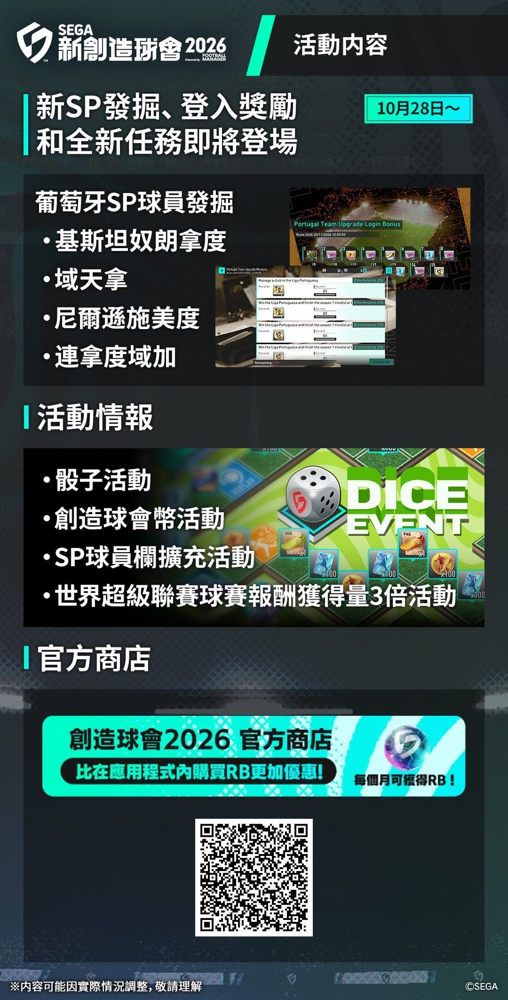
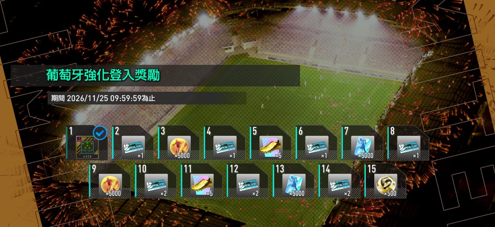
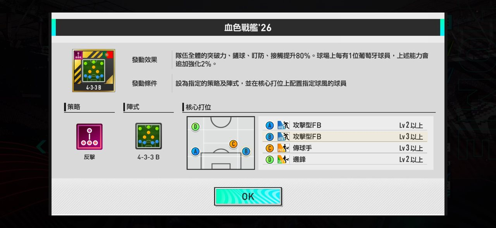
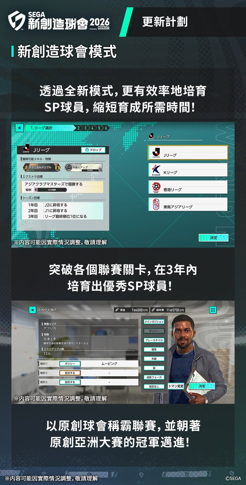

| # | 卡面 | 名稱 | 加入記錄 | 位置 | 球風 | 策略 | 稀有度 | 評分 | 總合 | 射門 | 傳球 | 盤球 | 防守 | 體能 | 速度 |
|---|
| 順位 | 卡面 | 名稱 | 稀有度 | 最適球風 | 分數 | 譯名註 |
|---|
最後更新：2026-10-28 19:30 HKT｜時間為 HKT（JST＝HKT+1）｜撳圖放大
📅 一覽
| 活動 | 期間（HKT） | 重點獎勵 | 要做 |
|---|---|---|---|
| 高級SP發掘 PICK UP 葡萄牙 | 10-28 15:00 ～ 11-25 09:59 | C朗等4名★3；限1次3,000RB保證★3 | 用登入送嘅SP券抽 |
| PICK UP 第2彈 | ～ 11-04 11:59 | 迪斯利杜爾等4名★3 | 想要就趁早，之後獎牌轉換 |
| 葡萄牙強化登入獎勵 | ～ 11-25 09:59 | 血色戰艦'26、SP券×10 | 每日登入 |
| 葡萄牙強化任務 | ～ 11-25 09:59 | ★3 波波（CB） | 贏葡萄牙聯賽 |
| 創造球會幣活動 | ～ 11-11 11:59 | 血色戰艦配件（短傳套裝） | 儲幣換配件 |
| PIZZA-LA盃 | ～ 11-11 11:59 | SSR特訓卡（完全突破） | 打盃賽 |
| 獎勵計數報酬2倍＋SP欄+1 | ～ 11-04 11:59 | 強化Pt／配件加倍 | 集中刷創造球會季度 |
| WPS S9延長→S10 | ～ 11-02 09:59；S10 至 12-01 02:59 | Legend段位 GB／SSR碎片 | 衝段 |
| SPECIAL 1vs1 第15/16屆 | 10-26～11-02；11-09～11-16 | — | 對應國籍／反擊球員 |
| 最強監督決戰（香港） | 報名至 11-05 23:59；預賽 11-14～15 | 參加送 GB×3000 | LV30+ 報名 |
🎰 轉蛋
高級SP球員發掘 PICK UP（葡萄牙）
HKT 10-28 15:00 ～ 11-25 09:59 維修後開始
| 稀有度 | 球員 | 位置 | 策略 | 球風 | 備註 |
|---|---|---|---|---|---|
| ★3 | 基斯坦奴朗拿度〔2026〕 | CF | 反擊 | 前鋒Ⅲ | 隊長特性「砲兵大將」：Lv5 時 CF/LW/RW 反擊球員 冷靜・突破力 +10% |
| — | 域天拿〔2025-2026〕 | DM | 反擊 | 傳球手Ⅲ | — |
| — | 尼爾遜施美度〔2025-2026〕 | RB | 反擊 | 攻擊型FBⅢ | — |
| — | 連拿度域加〔2025-2026〕 | CB | 反擊 | 搶截者Ⅱ | — |
- 1次 300RB/GB；10次 3,000RB/GB（保證★2以上）；每日1次 100RB
- 【限定1次】3,000RB，保證從10名中得1名★3
- PICK UP 球員係即將舉行「第8屆CHAMPIONS CUP」嘅加成對象
- 攻略站暫未有呢批球員數值／評分，所以SP圖鑑未收錄

圖中文字
活動內容
新SP發掘、登入獎勵和全新任務即將登場（10月28日～）
葡萄牙SP球員發掘：・基斯坦奴朗拿度 ・域天拿 ・尼爾遜施美度 ・連拿度域加
活動情報：・骰子活動 ・創造球會幣活動 ・SP球員欄擴充活動 ・世界超級聯賽球賽報酬獲得量3倍活動
官方商店：創造球會2026 官方商店 比在應用程式內購買RB更加優惠！每個月可獲得RB！（QR code）
※內容可能因實際情況調整，敬請理解
來源：官方公告
PICK UP SP球員發掘第2彈（仍進行中）
HKT 10-21 12:00 ～ 11-04 11:59
| 稀有度 | 球員 | 位置 | 策略 | 球風 | 備註 |
|---|---|---|---|---|---|
| ★3 | 迪斯利杜爾〔2025-2026〕 | AM/LW | 移動 | 攻擊手Ⅲ | — |
| ★3 | 尼高路簡迪〔2025-2026〕 | DM | 移動 | 盯防者Ⅱ | — |
| ★3 | 格列沙加〔2025-2026〕 | DM | 反應 | 盯防者Ⅱ | — |
| ★3 | 麥辛斯拿確斯〔2025-2026〕 | CB | 移動 | 搶截者Ⅱ | — |
- 收費同上；另有【限定1次】3,000RB 保證★3
- 期間後「第2彈獎牌」每1枚轉換為1枚「SP球員發掘獎牌」
來源：官方公告
🎯 活動／任務
PIZZA-LA盃
HKT 10-28 15:00 ～ 11-11 11:59 維修後開始
- 獎勵：SSR特別練習卡「【PIZZA-LA】配料夥伴（PIZZA-LA君＆碧哈姆）」（完全突破）
- 此卡攻略站暫未有分數，所以特訓卡圖鑑未收錄
來源：官方公告
其他限時加成（獎勵計數報酬／SP球員欄）
HKT 10-28 15:00 ～ 11-04 11:59 獎勵計數報酬獲得量2倍（官方公告）
HKT 10-28 15:00 ～ 11-04 11:59 SP球員欄擴充+1
- ⚠ 官方公告寫2倍、FB圖寫3倍，本站跟公告（2倍），以遊戲內為準
- 「創造球會幣」獲得量唔會因此活動變2倍
- SP球員欄擴充：用緊創造球會強化通行證者最多可編制4欄
來源：官方公告
WPS：S9 延長 ＋ S10
HKT ～ 11-02 09:59 S9 延長至（11/2 有維修）
HKT 11-02 ～ 12-01 02:59 S10（11/2 維修後開始）
- 配對及評分計算方式變更
- 新增 Legend 段位：首次升上 GB×1000；季度獎勵 GB×2500；前1000名 SSR碎片×50
- Master.1 排名獎勵新增 SSR碎片（1–600名×30；601–8000名×20）
來源：官方公告
SPECIAL 1vs1
HKT 10-26 12:00 ～ 11-02 11:59 第15屆：阿根廷／荷蘭／瑞士／挪威／南非球員 +20%
HKT 11-09 12:00 ～ 11-16 11:59 第16屆：反擊球員
來源：官方公告
官方網上商店（RB 加送）
HKT 10-28 ～ 開售
- 創造球會彩虹通行證：付費RB×980 ＋ 30日每日免費RB×100；商店加送免費RB×100
- 強化通行證：RB×1,500；30日內 SP欄+1、特別練習欄+2；商店加送免費RB×150
- 商店購買嘅RB 不能喺 PS4／PS5／Steam 使用
- 二手消息（電擊Online）：首次登入商店送500RB，官方未確認
來源：官方公告
第2屆最強監督決戰（香港）
HKT ～ 11-05 23:59 報名截止（LV30+、18歲或以上）
HKT 11-14 19:00 ～ 11-15 22:00 網上預賽（兩日 19:00–22:00）
HKT 11-29 ～ 線下決賽：VSING Beats 九龍旗艦店
HKT 12-06 ～ 日本線下交流賽
- 參加獎勵 GB×3000
圖中文字
第2屆 新創造球會2026 最強監督決戰 in HONG KONG
香港線上預賽 2026.11.14(六)-15(日)
香港線下決賽 2026.11.29(日)
日本線下交流賽 2026.12.6(日)
報名期間 即日起至2026.11.5(四)23:59止
來源：官方公告
🎁 登入獎勵
葡萄牙強化：登入獎勵＋強化任務＋陣式連鎖「血色戰艦'26」
HKT 10-28 15:00 ～ 11-25 09:59 維修後開始
- 登入獎勵：陣式連鎖「血色戰艦'26」（反擊／4-3-3 B）、最多10張高級SP球員發掘券
- 葡萄牙強化任務：贏葡萄牙聯賽可得 ★3 波波（CB／反擊／衝刺型CBⅡ）

圖中文字
葡萄牙強化登入獎勵
期間 2026/11/25 09:59:59為止
第1天 陣式連鎖（4-3-3 B）
第2、4、6、8天 SPECIAL TICKET×1；第10、12、14天 ×2（合共10張，即高級SP球員發掘券）
第3、9天 金色球員圖示×5000
第5、11天 金波鞋×5
第7、13天 藍色球員卡圖示×5000
第15天 金球×500
（圖示名稱圖中無文字，屬推斷：金色＝球員強化Pt？藍色＝訓練員強化Pt？金球＝GB）

圖中文字
血色戰艦'26
發動效果：隊伍全體的突破力、鏟球、盯防、接觸提升80%。球場上每有1位葡萄牙球員，上述能力會追加強化2%。
發動條件：設為指定的策略及陣式，並在核心打位上配置指定球風的球員
策略：反擊
陣式：4-3-3 B
核心打位：A 攻擊型FB Lv2以上；B 攻擊型FB Lv3以上；C 傳球手 Lv3以上；D 邊鋒 Lv2以上
來源：官方公告
🛠 版本改動（Ver2.4）
Ver2.4 更新 ＋ 維修（已完成）
HKT 10-28 10:00 ～ 10-28 15:00 Ver2.4 維修
- 維修補償：GB×300
- 更新後全員送「SP球員發掘券×10」（感謝禮）
- Archive Coin 兌換追加 ★3 CB 布喬（最多3次）
- 覺醒改為季度結算時發生；WPS配對／評分變更；新助理 Neontetra Seika
- 選拔可登錄創造球會球員；配件推薦穿戴＋「效果」篩選
- 任務獎勵一鍵領取；骰子活動新增射門挑戰；比賽重播（Ver2.4前）失效
更新計劃：新創造球會模式（日期未公佈）
- 官方FB「更新計劃」圖，未有推出日期；畫面為日文版開發中截圖

圖中文字
更新計劃
新創造球會模式
透過全新模式，更有效率地培育SP球員，縮短育成所需時間！
（畫面：1.リーグ選擇 Jリーグ／Kリーグ／香港リーグ／東南アジアリーグ；エクストラ目標 アジアクラブマスターズで優勝する；シーズン目標 1年目J2昇格、2年目J1昇格、3年目リーグ1位）
突破各個聯賽關卡，在3年內培育出優秀SP球員！
（畫面：スカウト指示）
以原創球會稱霸聯賽，並朝著原創亞洲大賽的冠軍邁進！
※內容可能因實際情況調整，敬請理解
❓ 未確認
未確認／未有資料
- Ver2.4 新球員數值、評分：s2026-strategy.com 截至 2026-10-28 仍未更新（SP 533名、特訓卡50張，排名無變）
- 第8屆CHAMPIONS CUP 日程：官方未公佈
- Neontetra Seika 嘅 X（Twitter）活動詳情：請睇官方X